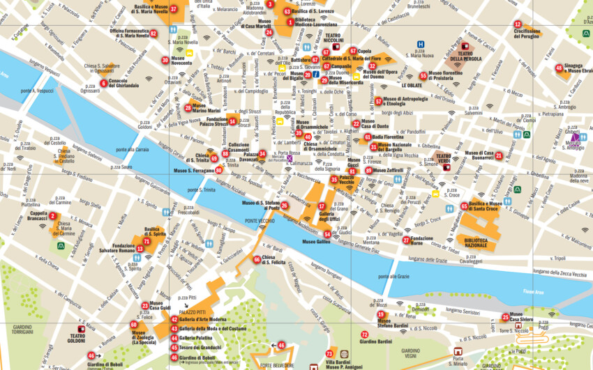

Who are we?
Hi! We are two students of Liceo A. Monti and we also attend Net@. We are really passionate about coding and enjoy this project. We hope that you'll like our startup idea as much as we do!
Why did we choose to create this startup? What problem did we encounter?
We decided to create this startup to help people commuting and travelling on public routes, without big efforts. Our startup is also meant to promote public means of transport, bikes and scooters, which are more sustainable than private cars. Lastly, we designed UrbixWay so that, if there are any delays or deviations of buses or trains, you'll be alerted.
How does it work?
UrbixWay is really simple to use! It is similar to Google Maps, but only for public transport routes and cycle paths. You can search for routes and see transport in real time, find places to rent bikes or scooters and know the best way to get wherever you need to go. The app will also send notifications for delays or cancellations.
Who is it for?
UrbixWay is designed for commuters, whether they're students or workers, but of course anyone can use it!
Contact us!
pirulli.viviana@liceomonti.edu.it
gilardi.niccolò@liceomonti.edu.it